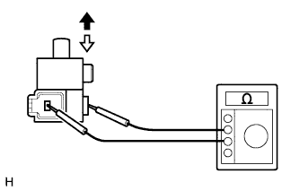

PARKING BRAKE SWITCH > INSPECTION |
| 1. INSPECT PARKING BRAKE SWITCH ASSEMBLY |
|  |
Measure the resistance according to the value(s) in the table below.
| Tester Connection | Switch Condition | Specified Condition |
| Switch connector - Switch body | On (Shaft is not pressed) | Below 1 Ω |
| Off (Shaft is pressed) | 10 kΩ or higher |
 | On |
 | Off |